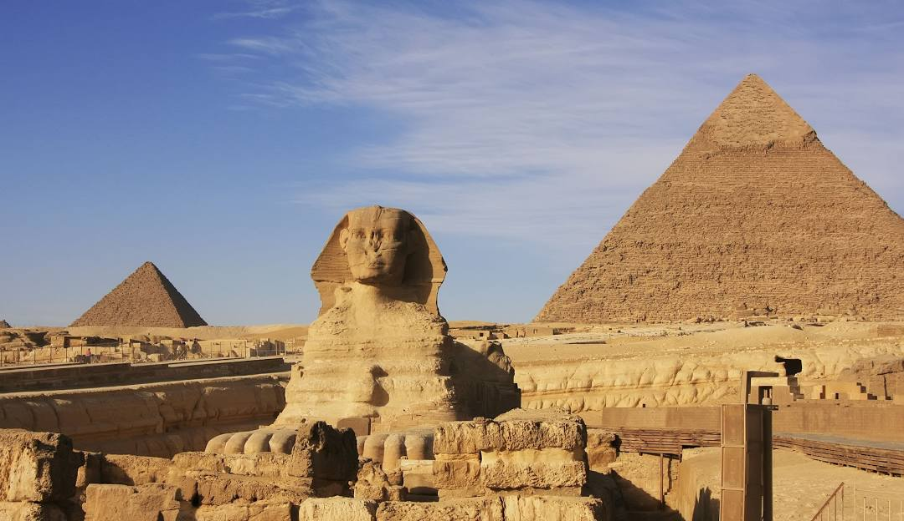

Egypt has many things to see and to do, from visiting the Pyramids of Giza, going to the temples of Luxor, or cruising down the Nile. This country has been a wonder of the world for centuries, with the mystery of how the pyramids were built and the rich culture surrounding the city. If you are planning a trip to Egypt anytime soon, this website will provide essential tips and tricks for a smooth and enjoyable journey to Egypt, including what to do and what not do. I wanted to make this site because I am obsessed with Egypt and will be going to Egypt this summer with my family for my graduation present, so I wanted to do some reseach for myself but also to help out anyone else who is planning to go. Egypt is a gorgeous country with a lot of history and customs, so it is important you are prepared and know what to expect. Also, it is extremely important that you are respectful of the customs and religions in Egypt. If you are curious to learn more, please navigate over to the "Tips" page for a detailed list of everything important to keep in mind when traveling in Egypt!
